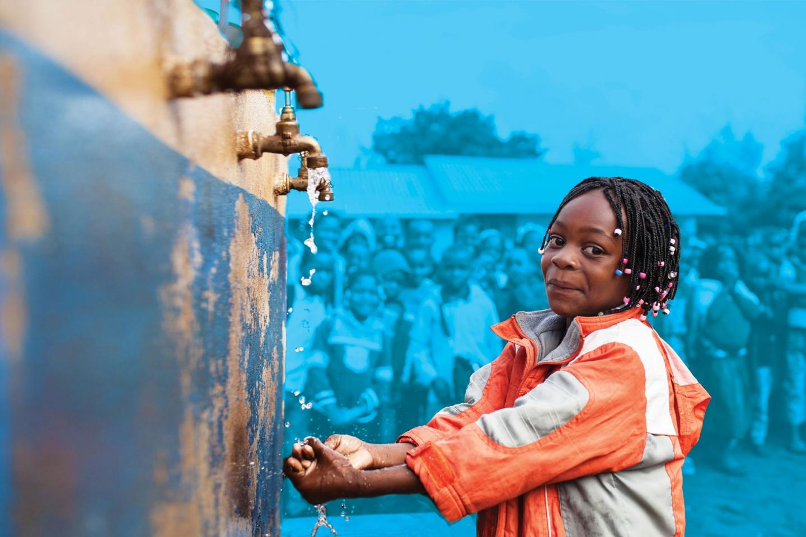

Services We Offer

Bulk Water Delivery
We can provide tank fills and a range of on-site services, bulk drinking water tankers. Our hire fleet includes water bowsers and static tanks in various sizes and volumes.

Home Safe Drinking Water
We offer a variety of alternative water supplies, with bulk bottled water delivery being one of our most popular solutions.

Community Service
Part of our proceeds goes in helping community services. Check out the gallery and site donations for more.
Partners


Follow Us
Maji Nyumbani